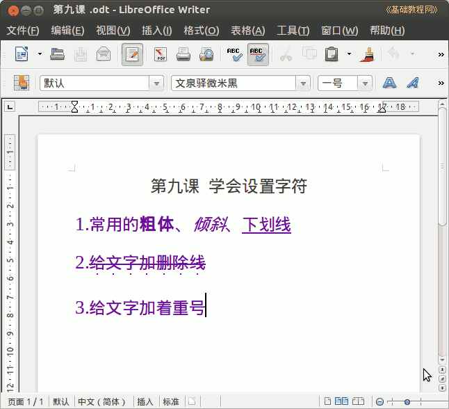

2011-2012 第二学期七年级文字处理和网页教学设计
作者：TeliuTe 来源：基础教程网
九、学会设置字符 返回目录 下一课
（一）教学设计
1、学习目标：学会字体字号加粗修饰
2、注意事项：对应的文字上加上相应的修饰，绕过弯来。
3、教学过程：
1）教师准备学案和板书；
2）学生整队进入，开机抄黑板上笔记；
3）教师讲解板书演示操作；
4）学生打指法、日志、完成操作；
5）教师打勾记录学生指法成绩，检查日志和操作；
注：学生抄完笔记就开始打指法、日志，老师讲完后再继续完成；
（二）板书设计(学生笔记)
第9课 学会设置字符
1、常用的粗体、倾斜、下划线
2、给文字加删除线
3、给文字加着重号
工具－清空－全部－缓存－立即
操作图示：

（三）课后记 2012-3-20 20:23
下午的课，还没上就感觉累的
估计是想着四节下来又要筋疲力尽
--
估计还是方法有问题，这课应该挺轻松的
要求还是高了些，想着全部都学会了
--
不盯着自己就不知道学，这个得想法纠正过来才好
在现在这个环境下，不学也不会有什么严重后果
--
这么说来，都是自己在这折腾自己来着
多与少也并不能看到即刻效果，整体上和将来才有可能
--
第一个班卡的，italc 关两次，又重启了都不行
估计跟学生玩农场游戏有关，这个看不出来是否有程序运行
--
让把机子关了重开机，折腾一下下次就会自觉一些，上中学可以讲道理
都想着让别人关了自己去摘别人的，弄到最后网络卡住
--
要不找个方法把农场先关掉的，讲完再开那样
看看代码里有没有相关的功能，后面再看
--
讲一步做一步这样也可以做出来，只是没演示自己做着慢些
大部分做出来了，慢的还是没办法，基本操作没法补现在
--
下一节把.italc删除了好些，可以用了提前也讲好要求
学习上还是少些自信，碰到点问题就问，其实自己也会
--
writer保存老卡，也就是不会立刻存上，要等会不知是什么意思
直接关就保存不上，硬盘缓存吗也不该这么明显
--
还是要学会同时检查，这样一遍下来就省好多力气
学生总是心急，生怕一会丢了找不着，又得重打
--
占课少了，又开始留学生，一排整个空了
其实狠一点不放就没事了，这样下次还会留
--
无奈，
现实就这样
--
把E01改为两篇，要清空一下浏览器缓存
后面才想起来，这也是清除垃圾的方法
--
学生只管跟着做，不太管这是什么意思
把字符解释一下，这个翻译总觉得有些别扭不习惯
--
把容易问题的保存、恢复、卡住、点不开都理一下
下次弄就知道该怎么做了，提醒学生把不好打的字符记一下
--
慢的学生，减少一些要求，打上一条就好了
下次把差的往前调可以机会多些
--
返回目录 下一课
本教程由86团学校TeliuTe制作|著作权所有
基础教程网：http://teliute.org/
美丽的校园……
转载和引用本站内容，请保留作者和本站链接。